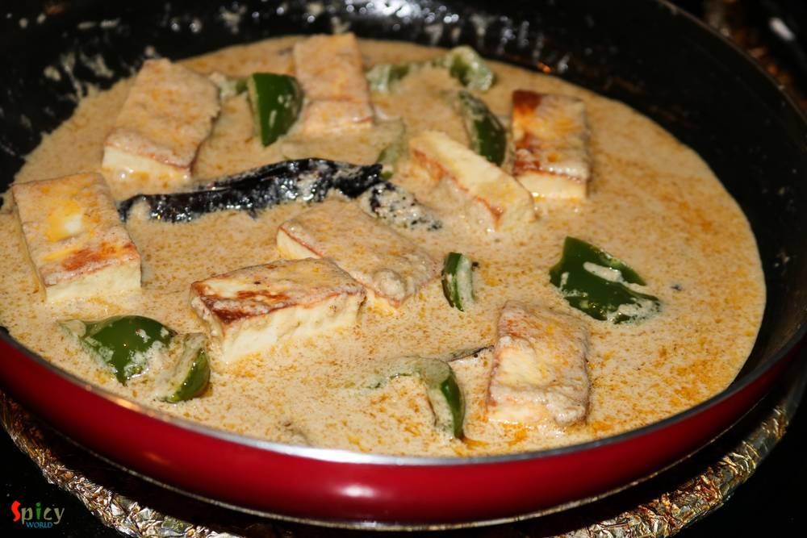
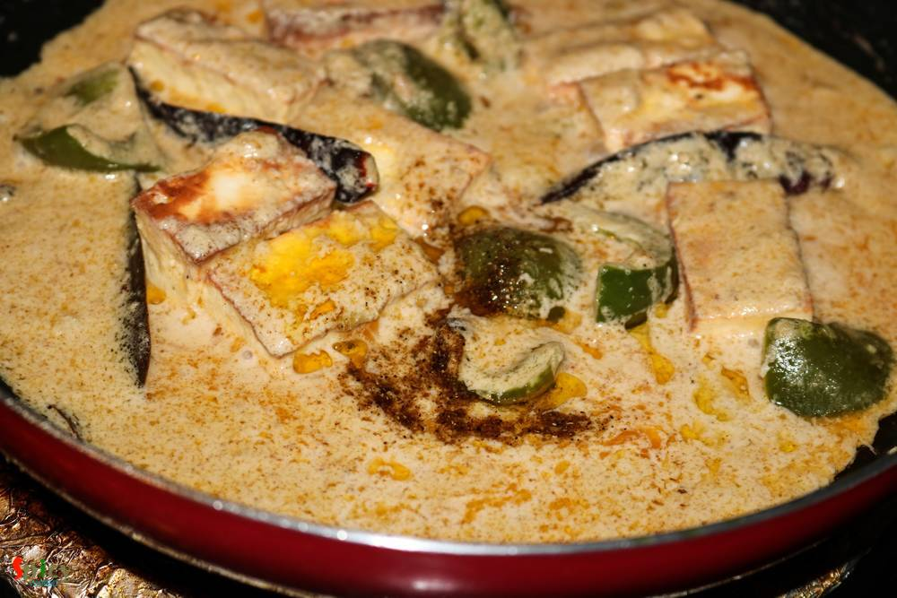

Simple and Easy Recipes
Paneer Rezala
© 2016 Spicy World, Published on: Aug 22, 2016
How many of you like the smell of 'capsicum' / green bell pepper in vegetarian dishes ?? I am. Whenever I cook, specially without onion and garlic dishes, most of the time I end up adding capsicum into it ... i know it sounds stupid but surprisingly the taste becomes more yumm ! Today's recipe is about 'paneer rezala', a vegetarian mughlai delicacy, where paneer cubes are cooked in a nut based white gravy and in that my very own addition is some fried capsicum. I made this last week for the first time and it has become one of our favourite. You can enjoy this with biriyani, pulao or some steamed rice. Do try this at your home and let me know how it turned out for you.

Ingredients
- 10 paneer cubes.
- 3 Teaspoons of poppy seeds paste.
- 3 Teaspoons of cashew nut paste.
- Whole spices (4 black peppercorns, 3 cloves, 4 green cardamom, 1 bay leaf, 2 dry red chilies, 1 small cinnamon stick).
- 3 Tablespoons of yogurt.
- Salt and sugar.
- 1 Teaspoon of each (hot red chilli powder and roasted coriander powder).
- Water.
- 6 capsicum / green bell pepper cubes.
- Pinch of garam masala.
- A drop of mitha attar / 3 drops of rose water.
- 2 Tablespoons of oil and 2 Teaspoons of ghee.
- 1 Teaspoon of ginger paste.


Steps
Heat the oil in a pan.
Add the paneer cubes and fry for 2 minutes. Then transfer them to a bowl of warm water. Keep it aside.
Now fry the capsicum cubes for few minutes and remove them from the pan.
In the remaining oil add a Teaspoon of ghee.
Saute the whole spices for few seconds.
Lower the heat and add ginger paster, hot red chilli powder and roasted coriander powder. Mix well.
Now beat the yogurt with 2 Teaspoons of water and a pinch of sugar. Add it to the oil. Keep mixing it on low flame for 5 minutes.
Then add salt, poppyseed paste and cashew paste. You can also add melon seeds / char mogoj paste. Cook for 15 minutes.
When the oil starts separating, the mixture will look like this. You have to cook it on low flame otherwise the raw smell of nuts will remain in the gravy.
Now add the fried paneer cubes, paneer soaked water and fried capsicums. Mix well and cook for 10 minutes.
Lastly add the remaining ghee, pinch of garam masala, mitha attar / rose water. Mix everything once and turn off the heat.
Your paneer rezala is ready ...
Serve this hot with biriyani / pulao ...
")